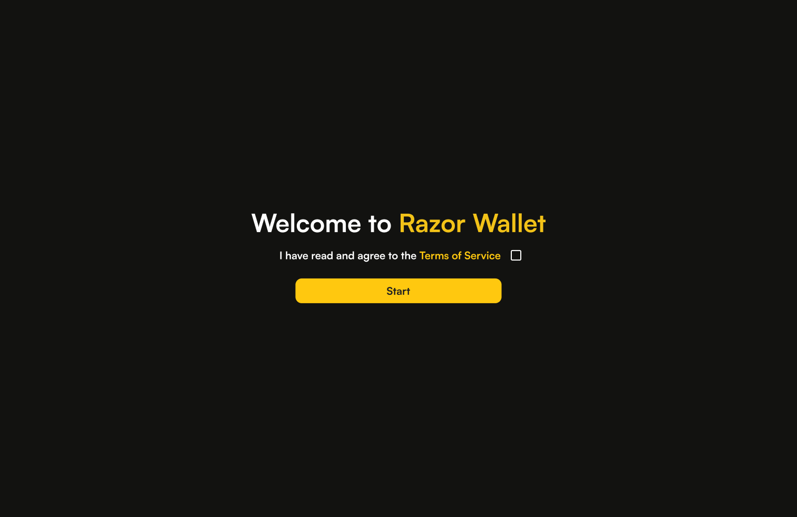
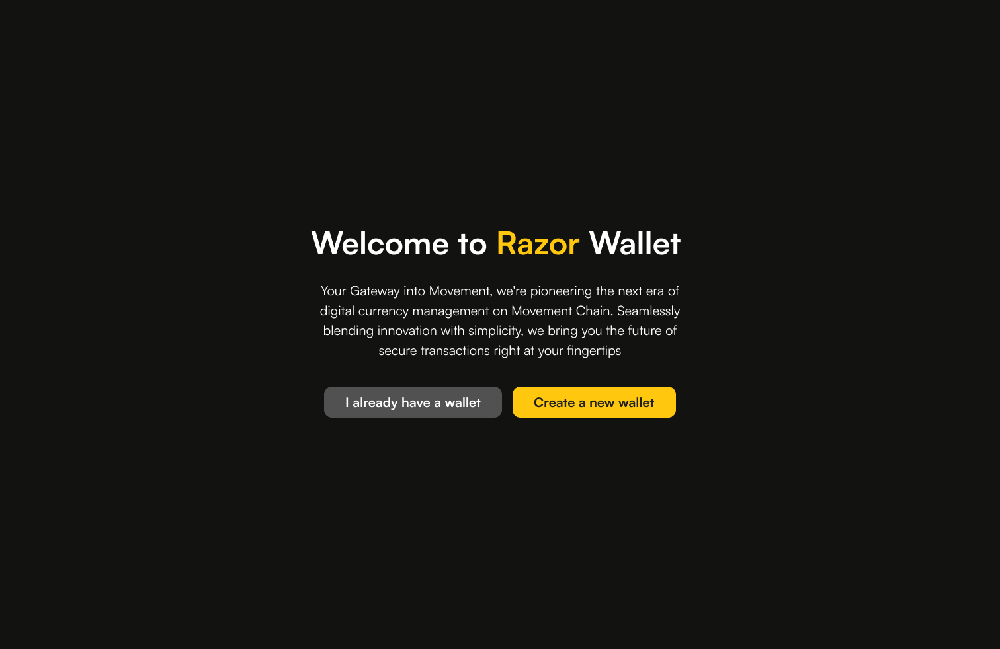
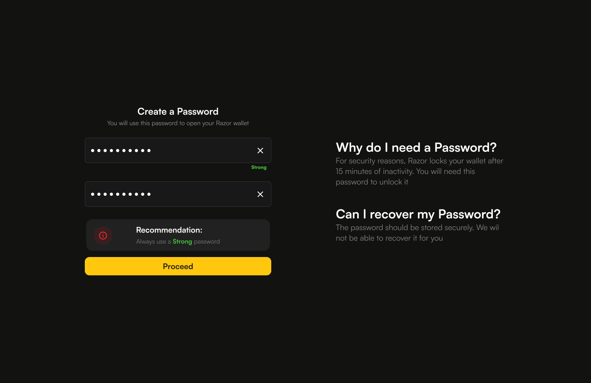
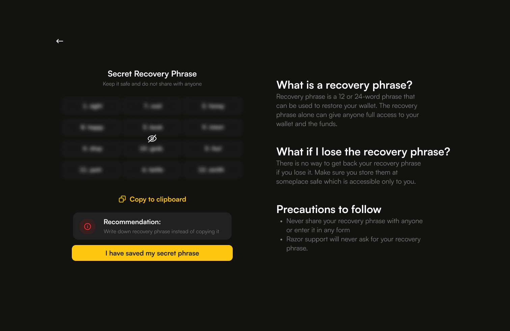
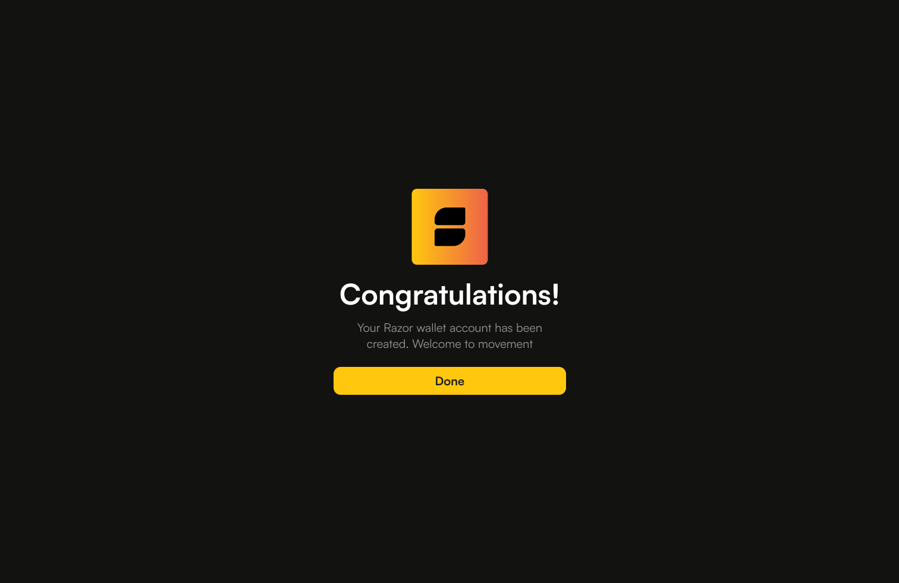
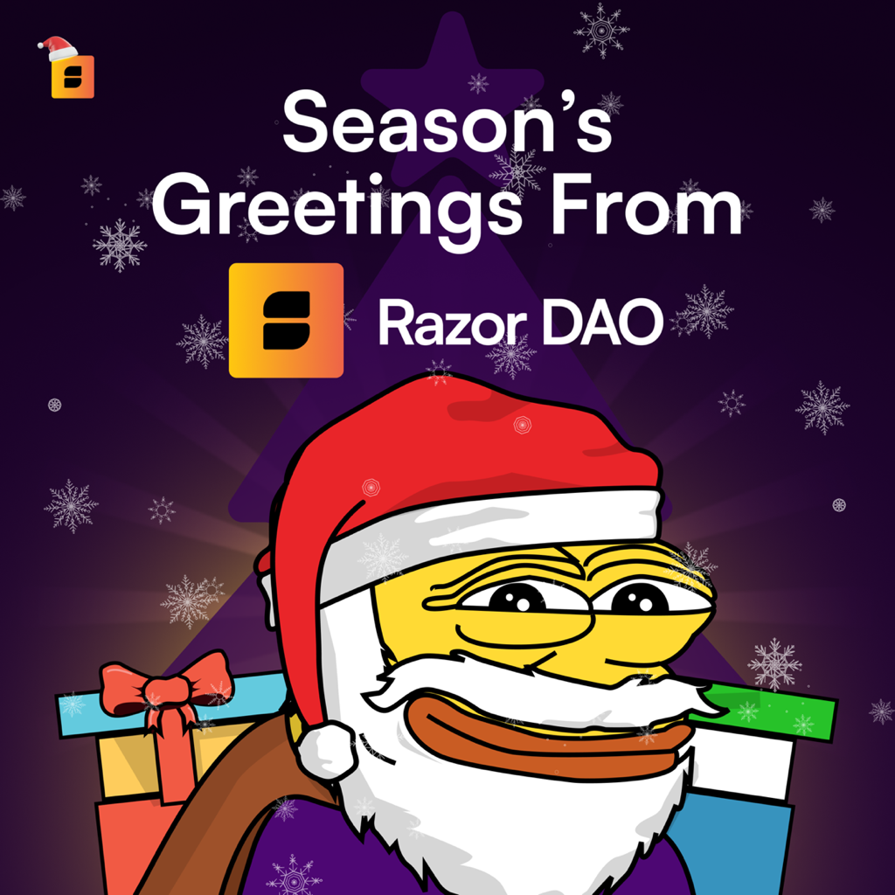

Designing a Web3 onboarding flow that does not lose the user before they begin
Razor Wallet is a browser extension wallet for the Movement blockchain. The redesign focused on reducing
friction without softening the security steps that make a non-custodial wallet trustworthy.
Product
Browser extension wallet for Movement
Role
Product design, UX writing, interaction design
Scope
Splash to wallet creation confirmation
Outcome
1,000 users in 24 hours, 50,000 in 72 hours
Overview
Web3 wallets often ask people to make three high-stakes decisions before they have a real sense of the product:
accept terms, create a password, and store a recovery phrase. The original Razor Wallet flow had more steps than
it needed, which gave users more chances to drop off.
The goal was to cut the flow down, keep every security requirement, and make each screen feel clear instead of
intimidating.
Security steps do not have to feel like obstacles. The harder part is explaining why they matter at the exact moment the user needs that context.
The Problem
The standard wallet onboarding pattern asks too much too early. Users are expected to agree to terms, create a
password they cannot recover, and write down a 12-word phrase that controls access to their funds before they
have had a single meaningful interaction with the product.
For a devnet launch aimed at developers and early adopters, that means every abandoned sign-up is a lost signal.
For a mainnet launch aimed at general users, it becomes a lost customer.
The brief
Cut the flow down, keep every security requirement, and make users feel informed rather than overwhelmed at each step.
The Central Argument
Most wallets bury the reason for each step in a help article no one reads. This redesign puts the explanation
beside the action, on the same screen, at the moment the user needs it.
The question is not whether to include security steps. The question is how to frame them so users understand why they matter.
The Flow
Screen
Purpose
1. Splash - Terms of Service
Entry gate with legal acknowledgement
2. Welcome - Wallet Choice
Route returning vs new users
3. Create a Password
Security layer 1 - local access
4. Secret Recovery Phrase
Security layer 2 - wallet ownership
5. Congratulations
Confirmation and entry into the product
Screen By Screen
Screen 1 - Splash / Terms of Service
The first screen establishes the product identity and gates entry behind a single consent action. It is
almost entirely negative space: brand, one sentence, one checkbox, one CTA.
That is deliberate friction. The checkbox forces an active acknowledgement instead of a passive scroll-past,
but nothing else competes for attention.
What it avoids
A full-screen terms modal, a wall of legal text, or multiple actions on the same screen.

Screen 1 · Splash / Terms of Service
Screen 2 - Welcome / Wallet Choice
The copy matters here because the buttons are really user self-identification statements. A returning user
should know instantly which path is theirs; a new user should feel clearly invited to continue.
The main weakness in the current draft is tone. The screen works, but the body copy leans too far into
marketing language for a flow that is otherwise plain and functional.
Better body copy
Razor Wallet lets you store, send, and manage assets on Movement Chain.

Screen 2 · Welcome / Wallet Choice
Screen 3 - Create a Password
This is the first moment where a user might pause and ask why the product needs more from them. The layout
answers that question without forcing them into a separate help screen.
The left panel handles the action. The right panel handles the explanation. That separation keeps the screen
calm, readable, and easy to scan.
What it avoids
A modal, a separate help screen, or tooltip-only explanations that do not work well on mobile.

Screen 3 · Create a Password
Screen 4 - Secret Recovery Phrase
This is the most consequential screen in the entire flow. The design has to avoid both extremes: warning
overload and under-explaining the risk.
The structure returns to the same two-panel layout, which gives the user visual familiarity after Screen 3.
The left panel handles the phrase. The right panel answers the actual questions people have in the moment.
Security note
The support line should make phishing risk explicit. Razor support will never ask for your recovery phrase.

Screen 4 · Secret Recovery Phrase
Screen 5 - Congratulations
The final screen closes the loop, confirms success, and gives the user one clear way forward. The Razor logo
appears here as a reward signal after the effort of the setup flow.
The CTA should stay final and simple. Done works better than any eager onboarding language because it ends the
chapter instead of opening a new one.
What this screen avoids
Upsells, notification prompts, social sharing prompts, or any secondary action.

Screen 5 · Congratulations
What Made This Redesign Work
1. Two-panel education
Every security-heavy screen pairs action on one side with explanation on the other. Users who want context get it; users who do not are not slowed down.
2. Friction with purpose
The legal acknowledgement and the hidden recovery phrase are deliberate friction. Everything else is reduced.
3. Commitment copy
"I have saved my secret phrase" turns a button into an affirmation. That changes the tone of the action.
4. Visual consistency
Amber becomes the system language for primary actions, so the user learns the pattern once and keeps moving.
Honest Critiques
Screen 2 body copy still sounds too much like marketing and should be revised to something more functional.
The flow needs a progress indicator. A simple step counter would reduce abandonment anxiety.
The two-panel layout is elegant on desktop, but the right panel will need a mobile treatment.
The "Copy to clipboard" action on Screen 4 is risky and could probably be removed entirely.
Outcome
The redesigned flow launched on devnet.
1,000 users onboarded in the first 24 hours
50,000 users onboarded in 72 hours
The result was a five-minute reduction in average onboarding time without removing any of the security steps
that make a non-custodial wallet trustworthy.
Devnet users are not casual. They have seen enough wallets to recognise bad onboarding quickly, which makes the
numbers here meaningful.
Key Takeaway
Security and simplicity are not opposites in Web3 onboarding. The better question is whether you explain the why
at the right moment, on the right screen, in plain language.
This flow answers the question where it is asked, instead of pushing the user off to a help article they will never open.
Bonus Graphics
A few extra mascot explorations from the Razor world, kept here as a small visual appendix after the case study.

Bonus 01 · Razor Wallet promo artBonus 02 · Seasonal Razor DAO art